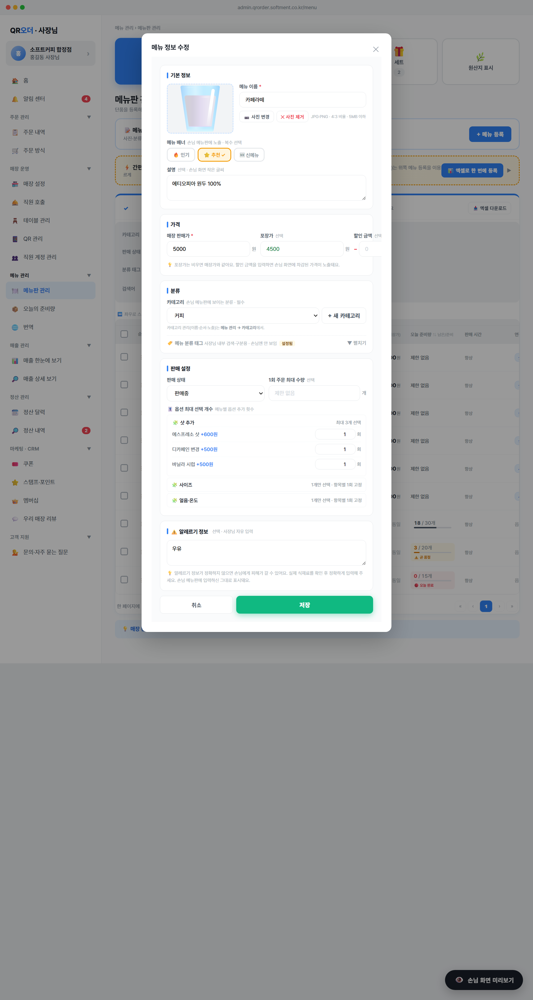

기존 14종 토글(우유·달걀·밀·…)을 폐기하고, 사장님이 직접 입력하는 textarea로 변경. 원산지 페이지에서 분리해 메뉴 상세 안으로 이동.

예) 우유, 대두, 견과류 / 밀가루·달걀·우유 함유, 견과류 제조 시설m.allergyText로 trim 후 저장MENUS[id].allergyText: string (default '')m.allergens: string[] (코드 배열) — ensureMenuExtras(m)가 자동 변환 (예: ['milk','soy'] → '우유, 대두')ALLERGENS 매핑 사용 ({code, label, icon})document.getElementById('me-allergy').value.trim().replace(/</g,'<')로 이스케이프 표시아메리카노 · 우유, 대두STORE_ALLERGY.notice)도 함께 노출MENUS.filter(m => m.status!=='숨김' && m.allergyText)${m.name} · ${m.allergyText} 출력STORE_ALLERGY.notice — 매장 공통 안내문 (예: "알레르기 문의는 직원에게...")<는 표시STORE_ORIGIN.text (변경 없음)STORE_ALLERGY.notice (메뉴판 하단에서 사용)MENUS[].allergyText로 이동toggleMenuAllergen 함수 삭제m.allergens)는 자동 마이그레이션 (코드→한글 라벨)